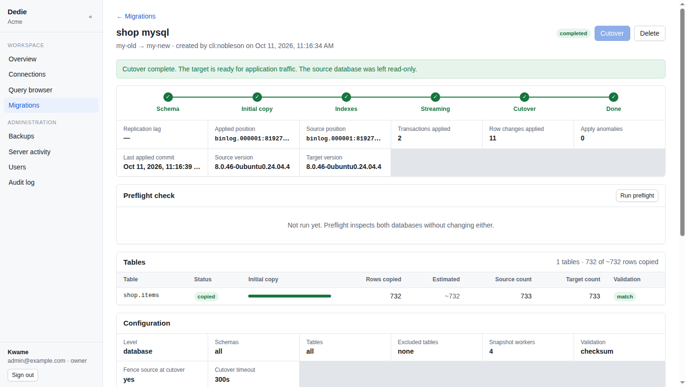
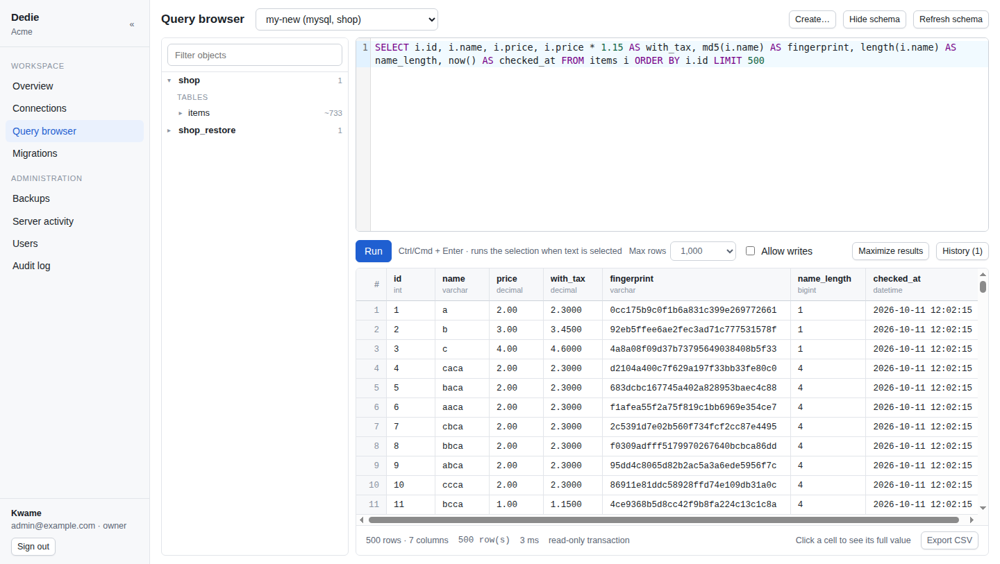
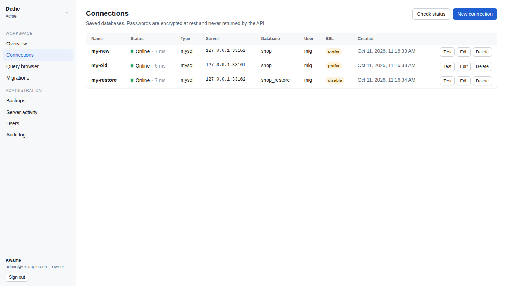

Move a live database without taking it down
Dedie upgrades a database to a new version, or moves it from MySQL to PostgreSQL, while the old one keeps serving your application. It also gives your team a query browser, encrypted backups and a full audit trail.

One tool for the life of a database
Everything runs on the same engine, behind the same access rules, whether you use the web interface, the command line or the desktop application.
Online migration
Copy a consistent snapshot, follow the replication log to stay in step, and switch over in a write pause measured in seconds. Pause and resume at any point.
Database, schema or table level
Migrate a whole database, selected schemas, or only the tables you name, with their indexes, constraints and triggers.
Query browser
A full-window workspace with a schema tree, a SQL editor that knows your tables, and a grid built for wide and long results. Read-only unless you say otherwise.
Backup and recovery
Logical backups encrypted before they reach disk, verified before every restore, and restored into any connection of the same kind.
Server administration
See which servers are online, who is connected and what they are running. Cancel a query, end a session, spot replication slots that hold WAL.
Built for organizations
Five roles, encrypted credentials, and a tamper-evident audit log that records every statement and every change.
Migration paths
Each path is covered by an end-to-end test that migrates a database under write load, pauses and resumes mid-stream, cuts over and compares the result.
| From | To | What moves | State |
|---|---|---|---|
| PostgreSQL 10 or newer | Any newer PostgreSQL | Tables, data, types, sequences, functions, views, indexes, constraints, triggers | Working |
| MySQL 5.6 or newer | Any newer MySQL | Tables, data, views, routines, triggers, events | Working |
| MySQL | PostgreSQL | Tables, data, keys, indexes and foreign keys, translated to PostgreSQL types | Working |
| PostgreSQL | MySQL | The reverse translation | In progress |
| MongoDB | PostgreSQL | Documents mapped to tables | Planned |
The PostgreSQL test runs version 16 to 18. The MySQL tests use MySQL 8.0; other MySQL versions have not been exercised yet. Moving between engines does not translate views, routines or triggers, and the preflight check lists every difference for your schema before anything is changed.
How a migration works
Your application keeps reading and writing the source until the last step. If source and target differ at the end, nothing is switched.
Preflight
Both databases are inspected without changing either. Anything that would block the migration, or change in meaning on the way, is listed before you start.
Schema
Tables and the objects they depend on are recreated on the target from the source's own definitions.
Snapshot
Every table is copied in parallel from one consistent point in time, and the replication position of that point is recorded.
Streaming
Changes made since the snapshot are applied in order. Each transaction is stored together with its position, so a crash or a restart never loses or repeats a change.
Cutover
The source is made read-only, the last changes drain, counters are synchronized and every table is compared. Then you point your application at the target.
A query browser with room to work
The editor and the results share the whole window, and you decide how much each one gets.
- Wide and long results. Scroll in both directions under a pinned header; thousands of rows stay smooth.
- Run what you select. Highlight one statement out of several and run just that.
- Completion from your schema. Table and column names for PostgreSQL and MySQL.
- Read-only by default. Writes need permission and a deliberate switch, and every statement is audited.

Know the state of every server
Connections show whether their server is answering and how quickly, and you can create what you need without leaving the page.
- Live status. Online or offline, with response time, checked every thirty seconds.
- Create databases, schemas and tables. A small table designer; the database server decides whether your account may.
- Weak encryption is flagged. Connections that do not require TLS are marked.

Security you can explain to an auditor
Dedie holds the keys to your databases, so it is built to be trusted with them.
Encrypted at rest
Database passwords are sealed with AES-256-GCM under a per-secret key, wrapped by a master key you control. Backups are encrypted as authenticated chunks.
Roles
Owner, admin, operator, analyst and viewer. The same rules apply to the web interface, the API and the desktop application.
Tamper-evident audit log
Every sign-in, statement and change is recorded, and each entry is chained to the one before it. An edited or deleted entry is detected.
Safe by default
The server refuses to serve plain HTTP beyond the local machine, new connections require TLS, and sessions end when a password or role changes.
Get started
Download a release, or build from source. The server, the command line and the desktop application share one engine and one data directory.
# build from source: Go 1.26+, Node 22+ git clone https://github.com/Eselase-Noble/Dedie.git cd Dedie make bin/dedie-server # http://127.0.0.1:8080 # or drive a migration from the command line dedie migrate create --name "shop 16 to 18" --source prod-16 --target prod-18 --fence dedie migrate preflight <id> dedie migrate run <id> dedie migrate cutover <id>
dedie-server
The web interface, the HTTP API and the worker that runs migrations. For teams.
dedie
The command line. Works directly on the data directory and needs no server.
Dedie Desktop
A JavaFX window around the same engine, for one person on their own machine.
The full guide, including requirements for each database and everything that is not migrated, is in the README.